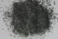

|
|
(For further information on spectroscopy, see:
http://speclab.cr.usgs.gov)
TITLE: Siderophyllite NMNH104998 DESCRIPT
DOCUMENTATION_FORMAT: MINERAL
SAMPLE_ID: NMNH104998
MINERAL_TYPE: Phyllosilicate
MINERAL: Siderophyllite (Mica group)
FORMULA: K(Fe+2)2Al(Al2Si2)O10(F,OH)2
FORMULA_HTML: KFe+22Al(Al2Si2)O10(F,OH)2
COLLECTION_LOCALITY: Brooks Mountains Seward Peninsula, AK
ORIGINAL_DONOR: National Museum of Natural History (Jim Crowley USGS)
CURRENT_SAMPLE_LOCATION: USGS Denver Spectroscopy Laboratory
ULTIMATE_SAMPLE_LOCATION: USGS Denver Spectroscopy Laboratory
SAMPLE_DESCRIPTION:
IMAGE_OF_SAMPLE:

END_SAMPLE_DESCRIPTION.
XRD_ANALYSIS:
40 kV - 30 mA and 6.5-9.5 keV (sidphyl.out, smear mount); 45 kV -
35mA and 7.3-9.5 keV (siphyl2.out, random or bulk mount)
References: Pattern for siderophyllite 1M in MSA Rev. Min. 13, p. 581; Huebner's
reference patterns for micas
Found: trioctahedral 1M mica, subordinate chlorite and calcite
(X-ray); immersion oil examination chlorite >= mica >>> carbonate
Sought: quartz [(101) reflection obscured; a very weak peak observed
in the position of the quartz (100)]
Comments: At least three phases present. The mica pattern is
consistent with siderophyllite. Sharp reflections suggest
mica is well crystallized and compositionally homogeneous.
The mica has a relatively large (002) spacing at 17.8,
suggesting the presence of a large cation such as K. The
chlorite (001) reflection is anomalously weak relative to the
other chlorite reflections observed. Observed eight weak
calcite reflections but found only a trace of carbonate in
immersion oil, suggesting that the carbonate may not be
homogeneously distributed.
J.S. Huebner and J. Pickrell,T. Schaefer, unpublished data, written communication, USGS, Reston, VA (1994)
END_XRD_ANALYSIS.
COMPOSITIONAL_ANALYSIS_TYPE: NONE # XRF, EM(WDS), ICP(Trace), WChem
COMPOSITION_TRACE:
COMPOSITION_DISCUSSION:
Since siderophyllite is volumetrically dominant according to my optical examination, its spectral signature will dominate over the chlorite. This probably also applies to the calcite. However, the spectrum looks strikingly similar to thuringite SMR-15 at wavelengths shorter than 2.0µm. The 2.3-µm region has small bands that are slightly shifted from thuringite (chlorite). This similarity may be coincidental, however, they may not be spectrally distinguishable at wavelengths short of 2.0µm. G. Swayze.
END_COMPOSITION_DISCUSSION.
MICROSCOPIC_EXAMINATION:
Mode:
70 vol% Siderophyllite
15 vol% Chlorite
10 vol% Calcite
5 vol% Quartz
trace Fe-staining
Siderophyllite is biaxial (-) with small 2V angle and has a dark green color in plain polarized light. Other gains with basal cleavage have a lighter 1st order gray interference color and also are biaxial (-) with a small 2V. Calcite and quartz are also present in minor amounts. G. Swayze.
END_MICROSCOPIC_EXAMINATION.
SPECTROSCOPIC_DISCUSSION:
END_SPECTROSCOPIC_DISCUSSION.
SPECTRAL_PURITY: 1b2?3?4_ # 1= 0.2-3, 2= 1.5-6, 3= 6-25, 4= 20-150 microns
| LIB_SPECTRA_HED: | where | Wave Range | Av_Rs_Pwr | Comment |
|---|---|---|---|---|
| LIB_SPECTRA: | splib04a r 4456 | 0.2-3.0µm | 200 | g.s.= |
| LIB_SPECTRA: | splib05a r 6224 | 0.2-3.0µm | 200 | g.s.= |
| LIB_SPECTRA: | splib06a r 20516 | g.s.= | ||
| LIB_SPECTRA: | splib06a r 20529 | g.s.= |
{kind=link}